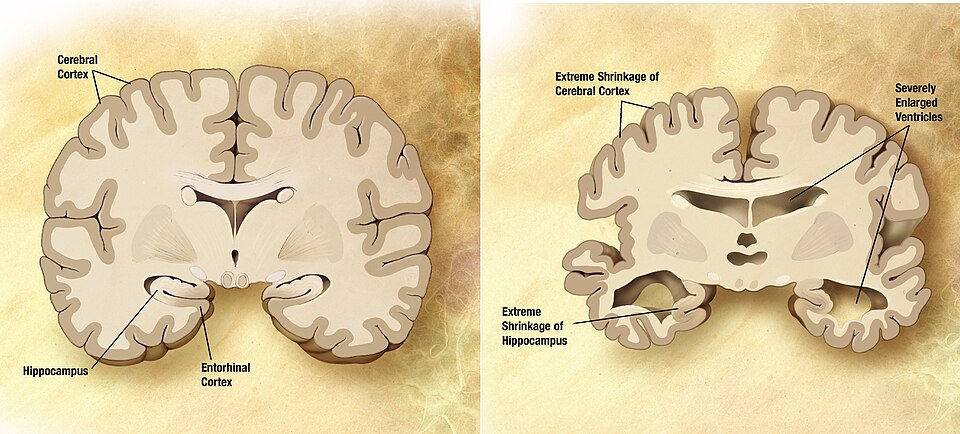

알츠하이머병 (Alzheimer's Disease)

| # | 원문 | 한국어 |
|---|---|---|
| 1 | Cerebral Cortex | 대뇌피질 |
| 2 | Hippocampus | 해마 |
| 3 | Entorhinal Cortex | 내후각피질 |
| 4 | Extreme Shrinkage of Cerebral Cortex | 대뇌피질의 심한 위축 |
| 5 | Severely Enlarged Ventricles | 크게 넓어진 뇌실 |
| 6 | Extreme Shrinkage of Hippocampus | 해마의 심한 위축 |
쉽게 풀면
서류가 잘 정리된 캐비닛을 떠올려 보자. 시간이 지나면서 서류들끼리 이상하게 들러붙고(베타아밀로이드 플라크), 서랍 안의 라벨 실이 엉켜버리면(타우 단백질 엉킴) 원하는 서류를 찾기가 점점 어려워진다. 알츠하이머병은 뇌 속에서 이와 비슷한 일이 벌어지는 병이다. 신경세포 바깥에는 베타아밀로이드라는 단백질 찌꺼기가 쌓여 플라크를 만들고, 신경세포 안에서는 타우 단백질이 비정상적으로 엉키면서 세포 내부의 물류 시스템을 망가뜨린다. 그 결과 신경세포끼리 신호를 주고받기 어려워지고, 결국 세포가 죽으면서 해마 같은 기억 관련 영역부터 위축이 시작되어 최근 기억부터 서서히 사라지게 된다.
왜 중요한가
알츠하이머병은 전 세계적으로 가장 흔한 치매 원인 질환이어서, 신경과학·의학뿐 아니라 공중보건 정책에서도 핵심 연구 주제로 다뤄진다. 베타아밀로이드와 타우 단백질의 축적 기전을 규명하는 연구는 조기 진단 바이오마커 개발과 신약 임상시험 설계로 이어지기 때문에, 관련 논문은 기초 신경생물학부터 영상의학, 약물 개발까지 폭넓은 하위 분야에서 인용된다. 또한 고령화가 진행되는 사회에서 환자와 가족의 삶의 질, 의료 비용 문제와 직결되는 만큼 역학·정책 연구에서도 자주 다뤄진다.
어떤 상태인가
알츠하이머병은 치매의 가장 흔한 원인으로, 치매의 약 60~70%를 차지한다. 뇌에 베타아밀로이드 플라크가 쌓이고 과인산화된 타우가 신경섬유 다발을 이루며, 초기에는 내후각피질과 해마가 먼저 손상된다.
1906년 Alois Alzheimer가 처음 기술했다. 2020년 기준 전 세계 환자는 약 5000만 명, 65세 이상의 약 6%로 추정된다.
진단과 평가
확진은 뇌 조직을 직접 검사해야 가능하며, 생전의 임상 진단은 오진율이 최대 약 23%에 이른다는 추정이 있다. 그래서 연구에서는 임상 진단 기준 외에 바이오마커와 영상을 함께 쓴다. 완치법은 없고, 진행을 늦추는 치료만 있다.
연구에서 다루는 방식
연구는 크게 병리 기전, 진단 바이오마커, 치료 표적으로 나뉜다. 논문에서는 대상자를 어떤 진단 기준으로 선정했는지, 아밀로이드·타우 상태를 PET, 뇌척수액, 혈액 중 무엇으로 확인했는지, 인지 평가 도구가 무엇이었는지를 밝히는 것이 중요하다. 알츠하이머병과 치매를 섞어 쓰면 다른 원인(혈관성 치매 등)의 환자가 포함되어 결과가 달라질 수 있다.
논문에서는 이렇게 쓰입니다
실제 논문에서
국내 학술지 논문에서 이 용어가 쓰인 문장을 그대로 옮겼다. 제목·학술지·연도와 원문 링크를 함께 적었다.
“항아밀로이드 면역 치료제는 알츠하이머병의 핵심병리기전인 아밀로이드 베타에 표적으로 결합해, 뇌에 축적된 아밀로이드 플라크를 제거함으로써 질병 진행을 늦추는 잠재력을 보여주었다.”
항-아밀로이드 베타 단일클론 항체 치료에서 발생하는 항-아밀로이드 영상 이상 소견: 영상의학과 의사를 위한 최신 업데이트, 대한영상의학회지, 2025 · KCI 한국학술지인용색인 · 원문 보기 ↗
“또한, cordycepin은 신경성장인자의 발현을 증가시키고 시냅스 가소성을 증진하여 알츠하이머병, 파킨슨병, 외상성 뇌 손상, 다발성 경화증과 같은 질환에서 치료적 가능성을 제시한다.”
중추신경계의 신경면역 조절에 대한 코디세핀의 영향에 대한 최근 연구, 생명과학회지, 2025 · KCI 한국학술지인용색인 · 원문 보기 ↗
조금 더 깊게 보면
알츠하이머병 연구에서는 병리 진행 정도를 나타내는 여러 지표가 함께 쓰인다. PET 영상으로 뇌 속 아밀로이드나 타우 침착을 직접 시각화하는 방법, 뇌척수액이나 혈액에서 관련 단백질 농도를 측정하는 방법, MRI로 해마를 비롯한 뇌 영역의 위축 정도를 추적하는 방법이 대표적이다. 또한 유전적 요인으로는 APOE 유전자형이 가장 널리 연구되어 있으며, 이는 발병 위험과 관련된 것으로 알려져 있을 뿐 결정적 원인은 아니다. 최근에는 아밀로이드나 타우를 표적으로 하는 항체 치료제 연구도 활발히 진행되고 있어, 논문을 읽을 때 이러한 바이오마커와 치료 표적 용어들이 함께 등장하는 경우가 많다.
주의할 점
알츠하이머병은 노화의 자연스러운 결과가 아니라 별개의 질병이며, "치매"와 동의어도 아니다. 치매는 기억력·판단력 저하 등의 증상을 포괄하는 상위 개념이고, 알츠하이머병은 치매를 일으키는 가장 흔한 원인 질환 중 하나일 뿐이다. 혈관성 치매, 파킨슨병 관련 치매 등 다른 원인도 존재한다.
참고 문헌
- Wikipedia contributors. (n.d.). Alzheimer's disease. In Wikipedia, The Free Encyclopedia.
- 위키백과 기여자. (n.d.). 알츠하이머병. 위키백과.